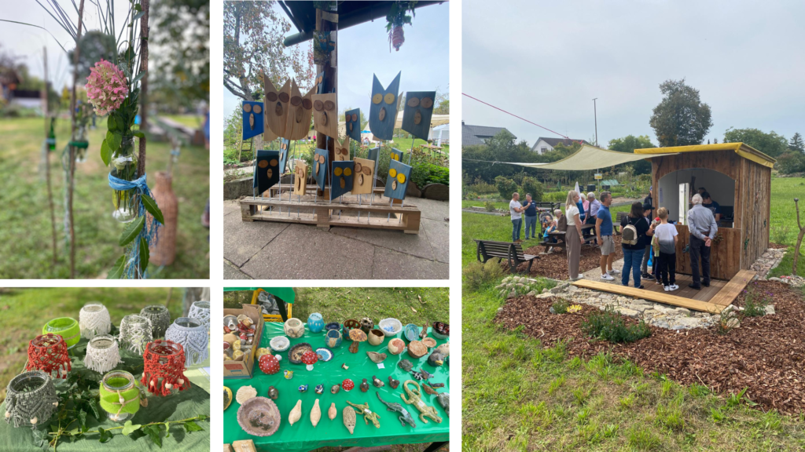

100 Jahre OGV Forst
Volles Haus beim 100-jährigen Jubiläum des OGV Forst
Nach all den Monaten der Vorbereitung war es endlich so weit – am 21. und 22. September feierte der OGV sein 100-jähriges Jubiläum. Und all die Arbeit hat sich gelohnt. Der Platz des OGV erstrahlte in vollem Glanz. Der Frühherbst zeigte sich noch einmal von seiner besten Seite und so konnte das Jubiläum bei angenehmen Temperaturen stattfinden.
Am 21. September fand in kleinem Kreis, mit einigen alten OGV-Vorständen und Vertretern der Gemeinde ein entspannter Rundgang über das Gelände mit anschließendem Weißwurstessen statt. Dabei gab es ausreichend Gelegenheit, auf die vergangenen 100 Jahre und das Erreichte zurückzublicken. Am Sonntag fand dann die große Jubiläumsfeier statt, die gleich mit einem akustischen Highlight der Bläserklasse Forst begann, die den Zuhörern ihr Können an den unterschiedlichsten Instrumenten bewies.
Kinderprogramm und Kleinkunstmarkt
Für Kinder war einiges geboten. Sie verwandelten sich beim Kinderschminken in ihre Lieblingstiere, bastelten im Tipi schicke Traumfänger oder bedruckten Taschen mit verschiedenen Stempelmotiven. Die kreativen Ergebnisse können sich wirklich sehen lassen. Ebenfalls kreativ war das umfangreiche Angebot des Kleinkunstmarktes. Von handgehäkelten Plüschtieren über aus Ton gebranntes bis hin zu Gewerken aus Naturstoffen war alles vertreten. Natürlich wurde auch für das leibliche Wohl gesorgt. Neben Kaffee und Kuchen gab es Waffeln und diverse Kaltgetränke, mit und ohne Alkohol.
Gerne zeigten die OGVler ihren Gästen das Gelände, die so, den Bienenbuckel, die Pachtgärten, aber auch die vielen verschiedenen Baum- und Pflanzenarten auf dem OGV-Gelände kennenlernen konnten. Wer mochte, könnte sogar sein eigenes Samenpaket mit nach Hause nehmen, um ein Stück Wildblumenwiese bei sich zu Hause erblühen zu lassen. Auf dem Gelände des OGV gab es einiges zu entdecken.
Wir möchten uns bei allen bedanken, die diese 100-Jahr-Feier so besonders gemacht haben. Vielen Dank an alle Helfer am Festtag selbst und während der Vorbereitungen. Ein herzlicher Dank geht an alle Kuchenbäcker, die Bläserklasse und die Aussteller des Kleinkunstmarktes. Vielen Dank auch an alle Gäste und Besucher, die dabei waren und Interesse an der Arbeit des Vereins gezeigt haben.